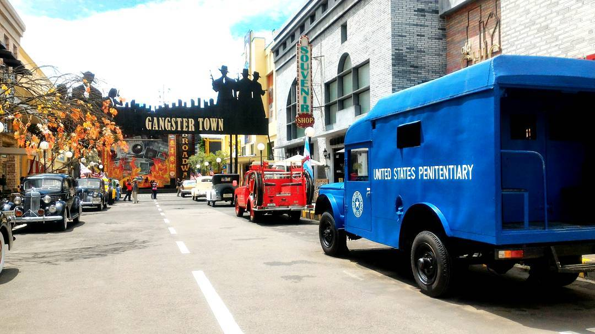

Budaya Malangan
Kebudayaan Kota Malang Kekayaan etnis dan budaya yang dimiliki Kota Malang berpengaruh terhadap kesenian tradisional yang ada. Salah satunya yang terkenal adalah Wayang Topeng Malangan (Topeng Malang), namun kini semakin terkikis oleh kesenian modern. Gaya kesenian ini adalah wujud pertemuan tiga budaya (Jawa Tengahan, Madura, dan Tengger). Hal tersebut terjadi karena Malang memiliki tiga sub-kultur, yaitu sub-kultur budaya Jawa Tengahan yang hidup di lereng gunung Kawi, sub-kultur Madura di lereng gunung Arjuna, dan sub-kultur Tengger sisa budaya Majapahit di lereng gunung Bromo-Semeru. Etnik masyarakat Malang terkenal religius, dinamis, suka bekerja keras, lugas dan bangga dengan identitasnya sebagai Arek Malang (AREMA) serta menjunjung tinggi kebersamaan dan setia kepada Malang.
Di kota Malang juga terdapat tempat yang merupakan sarana apresiasi budaya Jawa Timur yaitu Taman Krida Budaya Jawa Timur, di tempat ini sering ditampilkan aneka budaya khas Jawa Timur seperti Ludruk, Ketoprak, Wayang Orang, Wayang Kulit, Reog, Kuda Lumping, Sendra tari, saat ini bertambah kesenian baru yang semakin berkembang pesat di kota Malang yaitu kesenian “BANTENGAN” kesenian ini merupakan hasil dari kreatifitas dan inovasi masyarakat asli Kota Malang, sejak dahulu sebenarnya kesenian ini sudah dikenal oleh masyarakat Malang namun baru sekaranglah “BANTENGAN” lebih dikenal oleh masyarakat tidak hanya masyarakat lokal namun juga sampai luar daerah bahkan mancanegara. Khusus di Malang sering diadakan pergelaran bantengan hampir setiap perayaan hari besar baik keagamaan maupun peringatan hari kemerdekaan Republik Indonesia.
KOTA MALANG
Wisata yang ada di Malang
Malang merupakan sebuah Kabupaten/ Kota di Jawa Timur, Kabupaten/ kota ini memiliki sejuta pesona dan panaroma alam yang menakjubkan dan masih banyak yang tersembunyi, sehingga masih banyak orang yang belum mengetahui akan keindahan dan tempat keren yang ada di Malang. Malang punya banyak Spot objek wisata keren, mulai dari Situs budaya, situs bersejarah, spot foto foto kekinian , sampai air terjun yang sangat memanjakan mata dan harus segera kalian explore.
Baiklah agar tidak panjang lebar, langsung saja ke titik tujuan artikel ini kami buat, Artikel ini bertujuan Untuk memudahkan Anda menemukan tempat wisata di Malang yang paling indah, Terbaru dan di rekomendasikan untuk Anda Jelajahi. Berikut kami ulas secara singkat 76 Tempat Wisata di Malang Terbaru yang harus segera Anda explore:
Alun-alun Merdeka Malang

Kampung Warna-Warni
Masjid Agung Malang

Masjid Tiban Turen Malang
Museum Angkut
